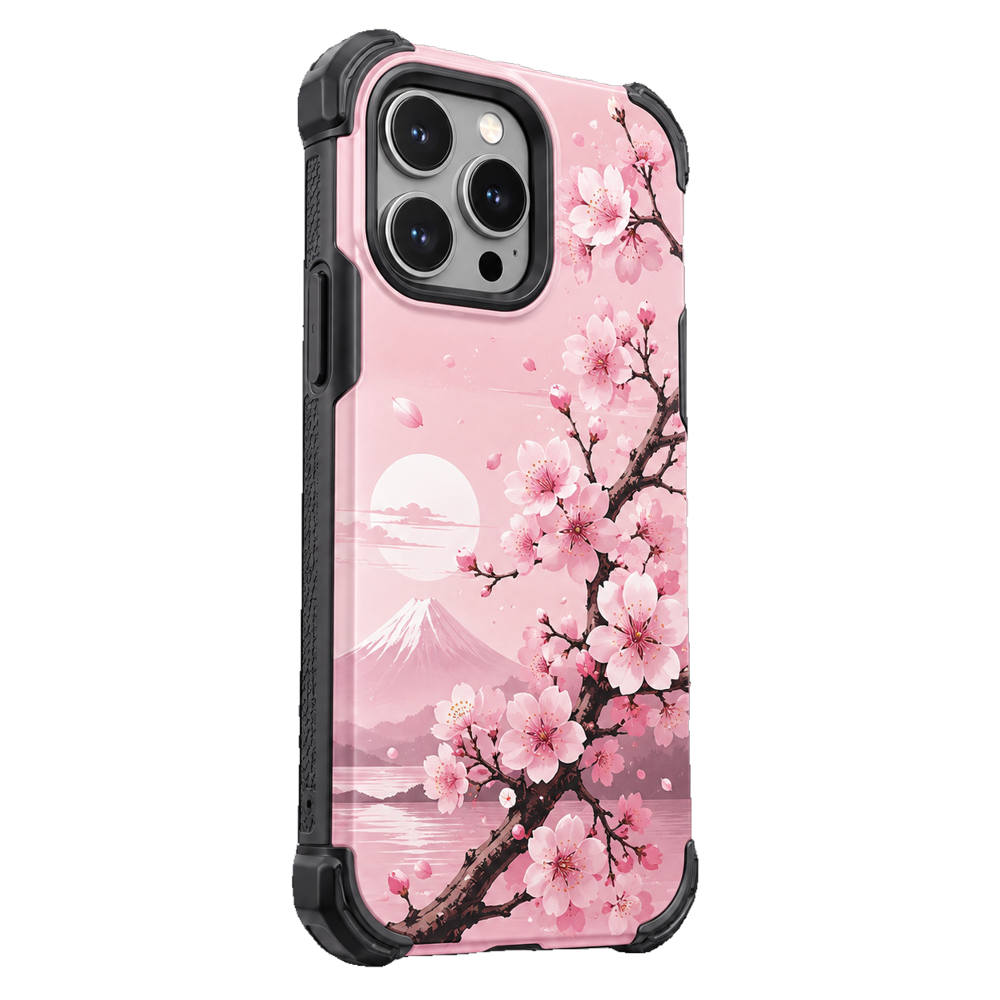
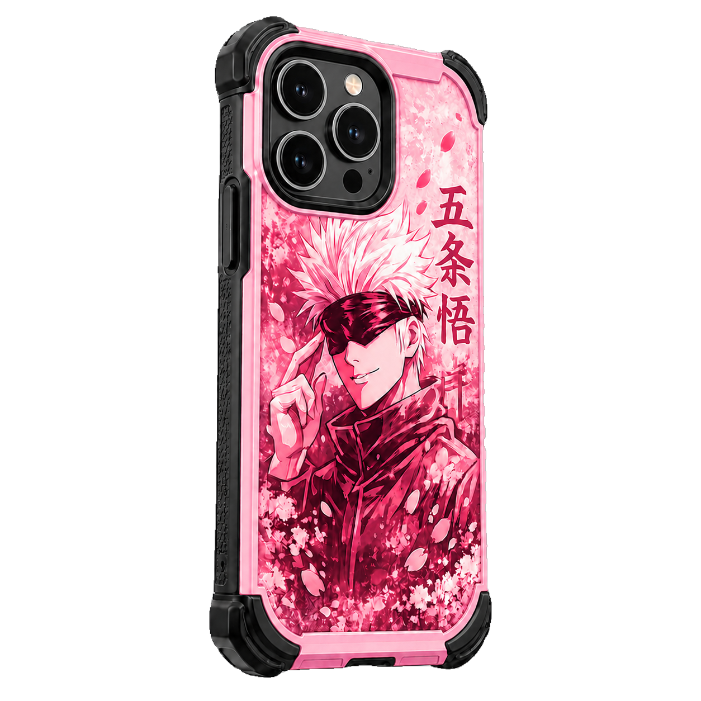
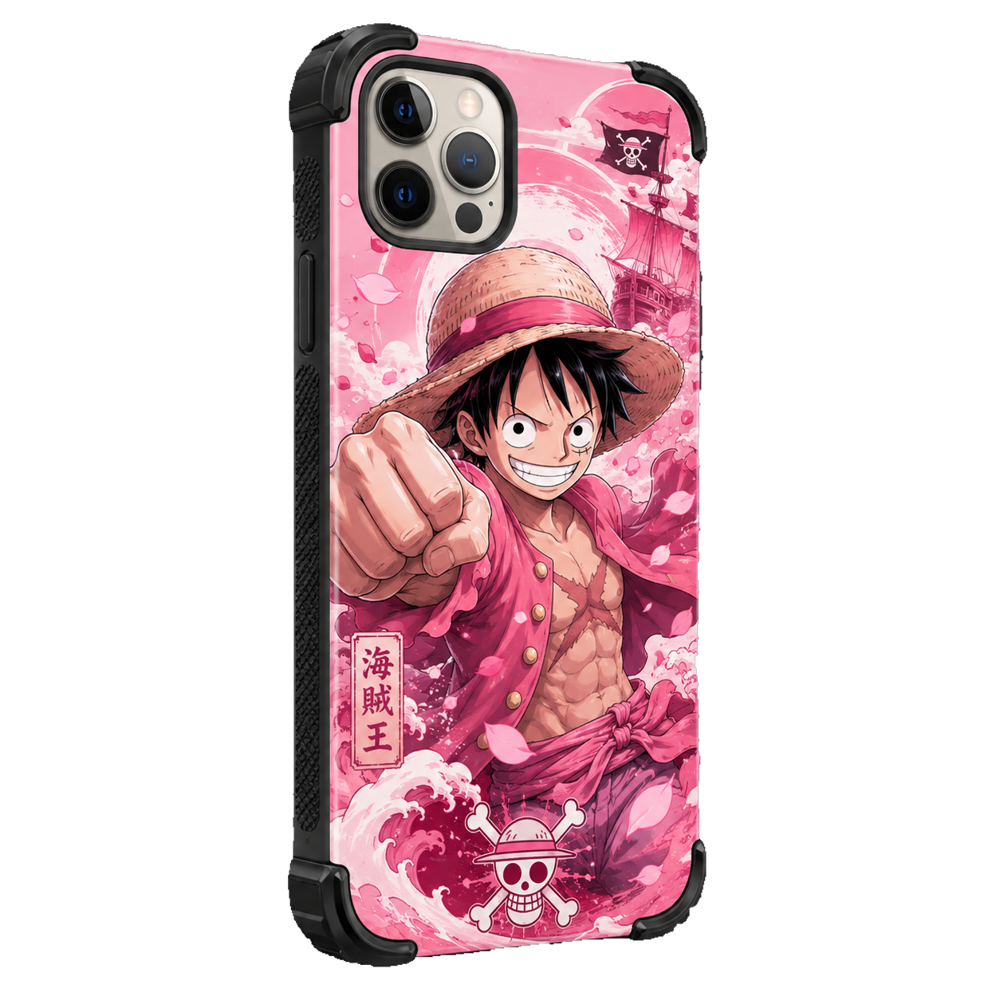

Fundas de móvil inspiradas en el mundo anime
AnimeCase Store es una tienda ficticia especializada en fundas de móvil con diseños inspirados en el anime, el manga y la cultura japonesa. Nuestro objetivo es unir protección, estilo y personalidad en un mismo producto.
Cada funda está pensada para personas que quieren diferenciarse y llevar en su móvil una estética visual llamativa, moderna y relacionada con sus gustos favoritos.



Colecciones destacadas
Nuestra tienda cuenta con diferentes colecciones de fundas: diseños florales inspirados en los cerezos japoneses, estilos oscuros de samuráis, diseños kawaii en tonos pastel y modelos inspirados en ciudades futuristas.
La variedad de estilos permite que cada cliente encuentre una funda adaptada a su personalidad, desde diseños discretos hasta modelos más coloridos y llamativos.
Diseños personalizados
Además de los modelos disponibles en la galería, AnimeCase Store ofrece la posibilidad de solicitar fundas personalizadas. El usuario puede indicar sus colores favoritos, el estilo que busca y el tipo de diseño que desea.
A través del formulario de presupuesto, el cliente puede pedir más información y explicar su idea para recibir una propuesta adaptada a sus necesidades.